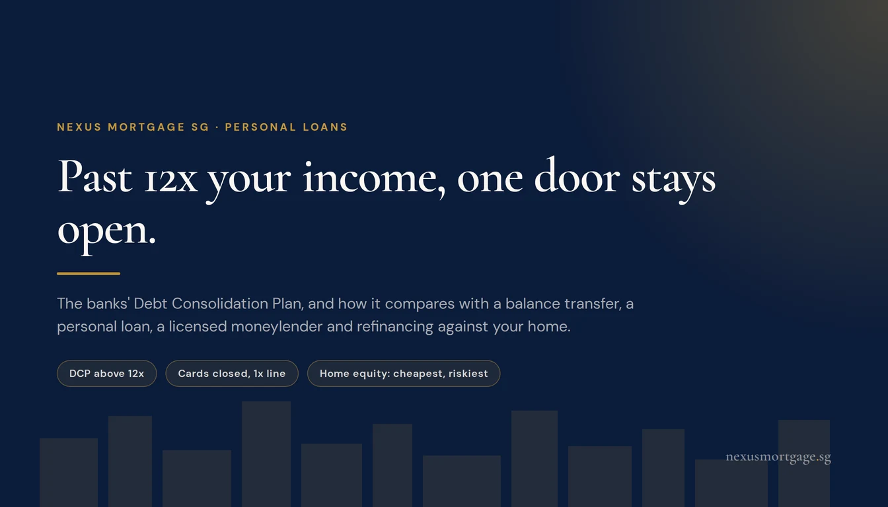
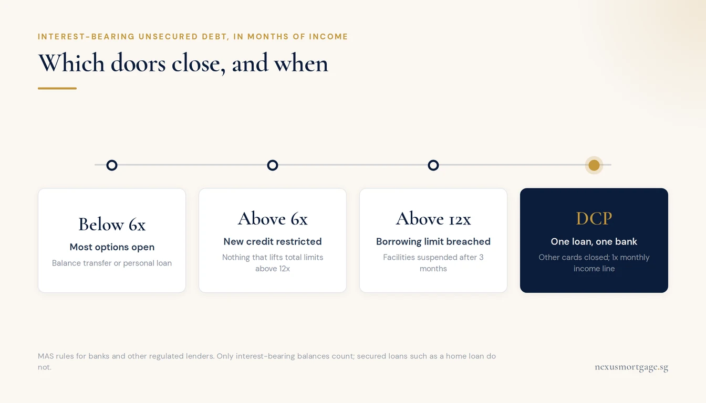
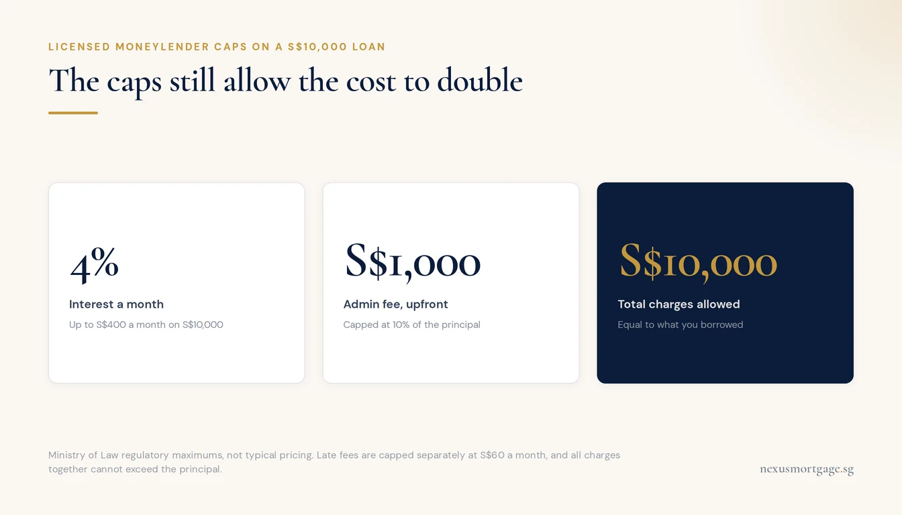

Debt Consolidation in Singapore: DCP, Balance Transfer, Loan or Home Equity?

If your interest-bearing unsecured debt has passed 12 times your monthly income, most options close: new cards and loans are blocked, and existing facilities are suspended after three months over the limit. The route designed for exactly that point is the banks' Debt Consolidation Plan (DCP): one loan at one bank, your other cards closed or suspended, and a small revolving line of 1x monthly income. Below that level, a balance transfer or a personal loan can do the same job more cheaply. A licensed moneylender is almost never the answer. And if you own private property, refinancing against it is the cheapest money of all, at the cost of putting the home behind the debt.
Where You Stand Decides Your Options

The DCP exists for the point where every other door has closed.
Singapore's rules on unsecured credit have two thresholds, both measured against your monthly income. They decide which consolidation routes are still open to you.
| Your interest-bearing unsecured debt | What the rules allow | Realistic options |
|---|---|---|
| Below 6x monthly income | New unsecured credit within each bank's income-based cap | Balance transfer, personal loan |
| Above 6x | No new credit that takes total limits above 12x | Existing facilities only; new ones often declined |
| Above 12x for 3 consecutive months | No further credit; existing facilities suspended | DCP, credit counselling |
Only interest-bearing balances count: card balances rolled over rather than paid in full, and unsecured loans that accrue interest. Secured loans such as your home loan do not. Our guide to how much you can borrow on a personal loan sets out each limit in full.
The Debt Consolidation Plan
The DCP is a refinancing programme offered by participating banks and financial institutions. It rolls your unsecured debts across different lenders into a single facility at one institution, with one monthly instalment. MAS rules allow lenders to go beyond the borrowing limit for exactly this purpose, to consolidate and refinance, which is why it remains available when everything else has closed.
Eligibility:
- Singapore Citizen or Permanent Resident.
- Annual income of S$20,000 to below S$120,000.
- Net personal assets below S$2 million.
- Total interest-bearing unsecured debt of more than 12 times monthly income. On S$5,000 a month, that means more than S$60,000.
Individual institutions may set higher income criteria, and approval is at each one's discretion, so terms vary between them. You apply to a participating institution directly.
What it cannot consolidate: joint-account loans, renovation loans, education loans, medical loans and business-related credit facilities.
What changes for you: your existing unsecured credit facilities with other institutions are closed or suspended. The DCP lender gives you a revolving credit facility fixed at one times your monthly income. That is deliberate. The plan only works if new debt stops accumulating while the old debt is repaid, and the structure enforces it.
For most people deep in card debt the DCP is a significant improvement: one instalment, a single rate that is typically well below revolving card interest, and a defined end date. Ask each institution for the EIR, the tenure and any fees, and compare them on EIR the way our flat rate versus EIR guide explains.
Balance Transfer
A balance transfer moves an existing card balance onto a facility that charges low or no interest for a promotional period, usually for a one-time fee. It is a short-term tool and works only under three conditions:
- You can repay the transferred amount within the promotional period. Whatever is left afterwards typically reverts to the facility's normal rate.
- You stop using the old card. Otherwise you end up with the transferred balance and a new one.
- You still have room under the limits to take on the new facility.
Treat the one-time fee as interest when you compare it. On a short promotional period it can make the effective cost higher than it looks.
A Personal Loan to Consolidate
A fixed-term personal loan can pay off several card balances and replace them with one instalment and a fixed end date. It is cheaper than revolving card debt and forces repayment on a schedule.
The catch is access. A new personal loan counts against each bank's income-based cap, which is 2 or 4 months' income depending on what you earn, and against the Credit Limit Management Measure. If your debt already exceeds 6 times your monthly income, a new facility that would lift your total limits above 12 times will be declined. So the people who most need to consolidate are often the ones a personal loan can no longer reach. If that is you, the DCP is the intended route.
Licensed Moneylenders

Borrowing from a moneylender to repay a bank rarely consolidates anything.
Licensed moneylenders operate under the Ministry of Law, with their own caps:
| Charge | Maximum |
|---|---|
| Interest | 4% a month |
| Late interest | 4% a month, on the overdue amount only |
| Late fee | S$60 for each month of late repayment |
| Administrative fee | 10% of the principal, when the loan is granted |
| All charges combined | Cannot exceed the principal of the loan |
Those caps protect borrowers from the worst outcomes, but read what they allow. On a S$10,000 loan, the upfront fee alone can be S$1,000, and total charges can reach S$10,000, doubling what you owe. Borrowing from a moneylender to pay a bank rarely consolidates anything. It usually adds a more expensive layer on top.
If you do deal with one, confirm it is on the Ministry of Law's list of licensed moneylenders. A licensed moneylender is not allowed to ask for your Singpass password, keep your NRIC, or approve a loan by phone, SMS or email before receiving your application. Any lender that does is not one to deal with.
Refinancing Against Your Home
If you own private property, or an EC past its minimum occupation period, you may be able to raise cash against it through a cash-out refinance, priced like a home loan rather than an unsecured loan. The difference in rate can be large. HDB flats are not eligible.
This is the cheapest money available to most homeowners, and it is also the one with the most at stake:
- The debt becomes secured on your home. Card debt you cannot pay damages your credit record. Mortgage debt you cannot pay can ultimately cost you the property.
- The term usually gets longer, so even at a lower rate you can end up paying interest for far more years.
- It still has to pass TDSR, unless the total loan stays at or below 50% of the property's value.
It makes sense when the spending that created the debt has stopped, the new instalment is comfortably affordable, and the aim is to clear expensive debt quickly rather than to free up room to borrow again. Our cash-out refinance guide covers how much can be raised, and if the pressure is already on the mortgage itself, start with what to do if you can't pay your home loan. This is the one route on this page where we can help directly.
Credit Counselling
If you have debts across several lenders and are not sure which route fits, Credit Counselling Singapore provides financial counselling and, where suitable, a facilitated arrangement to repay your creditors. It is worth a call before you sign anything new: ccs.org.sg, 6225 5227.
| Route | Best for | Main catch |
|---|---|---|
| Balance transfer | Card debt you can clear within months | Reverts to the normal rate after the promotion |
| Personal loan | Moderate debt, still well inside the limits | Declined once debt passes 6x with high limits |
| DCP | Unsecured debt above 12x monthly income | Other cards closed or suspended; 1x line only |
| Home equity | Private property owners with stable income | The home now secures the debt |
| Licensed moneylender | Rarely the right answer | Up to 4% a month plus fees |
Frequently Asked Questions
Singapore Citizens and PRs earning S$20,000 to below S$120,000 a year, with net personal assets below S$2 million and interest-bearing unsecured debt of more than 12 times monthly income. Institutions may set higher income criteria.
Interest-bearing unsecured debt such as card balances and most unsecured loans. Not joint-account, renovation, education, medical or business-related facilities.
Your unsecured facilities with other institutions are closed or suspended, and the DCP lender gives you a revolving line fixed at one times your monthly income.
Only while your debt is well inside the limits. Once it exceeds 6 times monthly income and your limits would pass 12 times, new unsecured credit is declined, which is what the DCP is for.
Generally not. Charges of up to 4% a month plus a 10% administrative fee usually make the problem worse. Speak to Credit Counselling Singapore first.
If you own private property or a post-MOP EC, a cash-out refinance can clear expensive debt at home-loan rates. HDB flats are not eligible. It puts your home behind the debt, so only do it once the spending has stopped.
Further reading
- How much can you borrow on a personal loan?: the 2x, 4x, 6x and 12x limits
- Flat rate vs EIR: how to compare what each option really costs
- Cash-out refinancing: raising money against private property
- Can't pay your home loan?: when the pressure reaches the mortgage
This article is general information about debt consolidation options in Singapore. It is not financial advice, and it is not an offer of credit. Nexus Mortgage does not provide personal loans, balance transfers or Debt Consolidation Plans; we advise on home and property financing. DCP eligibility and terms are set by each participating institution within the published criteria. Unsecured credit limits are set by MAS, and licensed moneylender caps by the Ministry of Law, as published at September 2026. Moneylender cost figures are the regulatory maximums applied to a S$10,000 illustration, not typical pricing. Sources: Credit Counselling Singapore: Debt Consolidation Plan, MAS: Borrowing limit on unsecured credit, MAS: Credit Limit Management Measure, Ministry of Law: Borrowing from licensed moneylenders.

About the author — Dan Ler has advised on Singapore home loans since 2017 at Nexus Mortgage SG, an independent brokerage comparing 16+ MAS-regulated lenders. Nexus has facilitated 500+ home loans across HDB, EC, private condo and landed property segments. Banks pay Nexus on disbursement, so there is no cost to the borrower.